The 12 Deviant Blades - Katanagatari Fansite -
"Dedicado a Carme, que de no ser por ella no conocería este anime."
 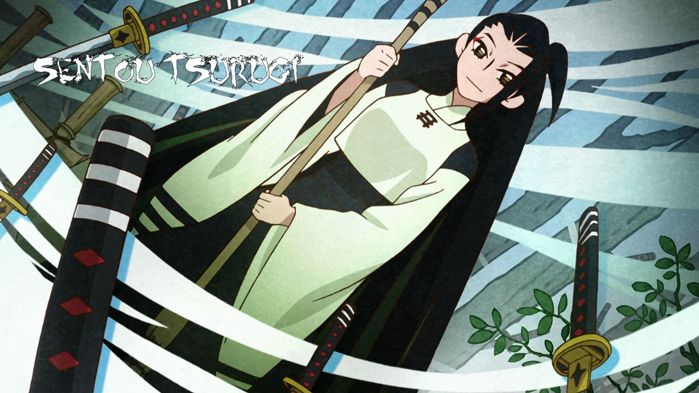
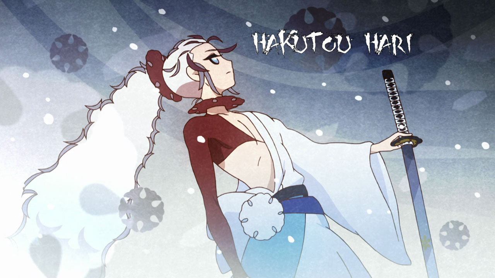
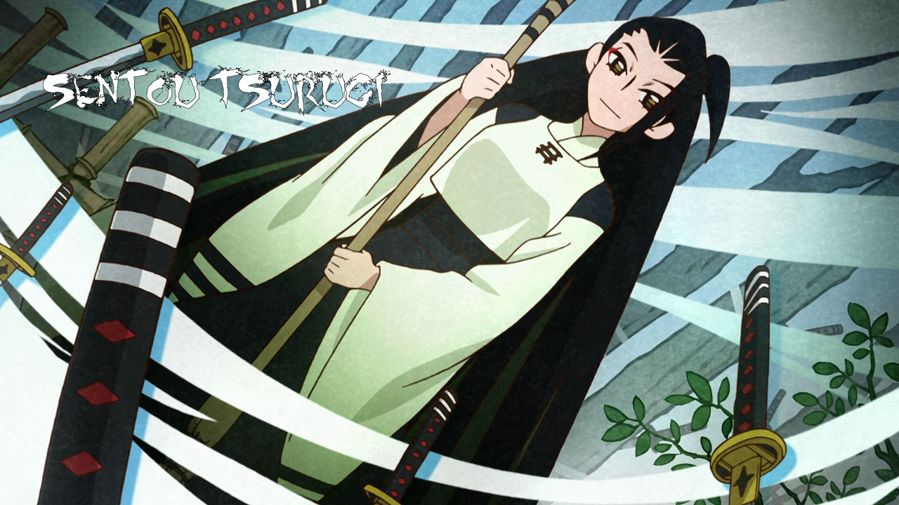
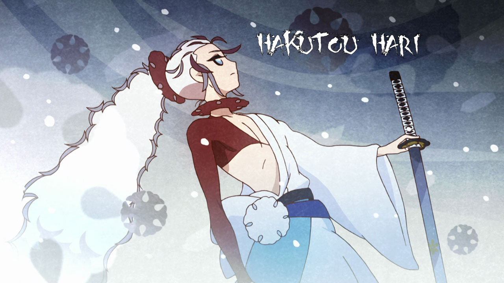
 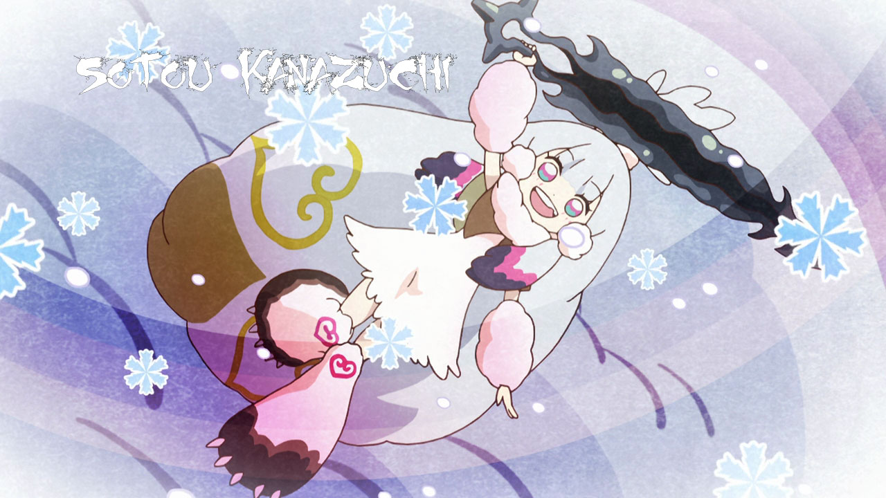
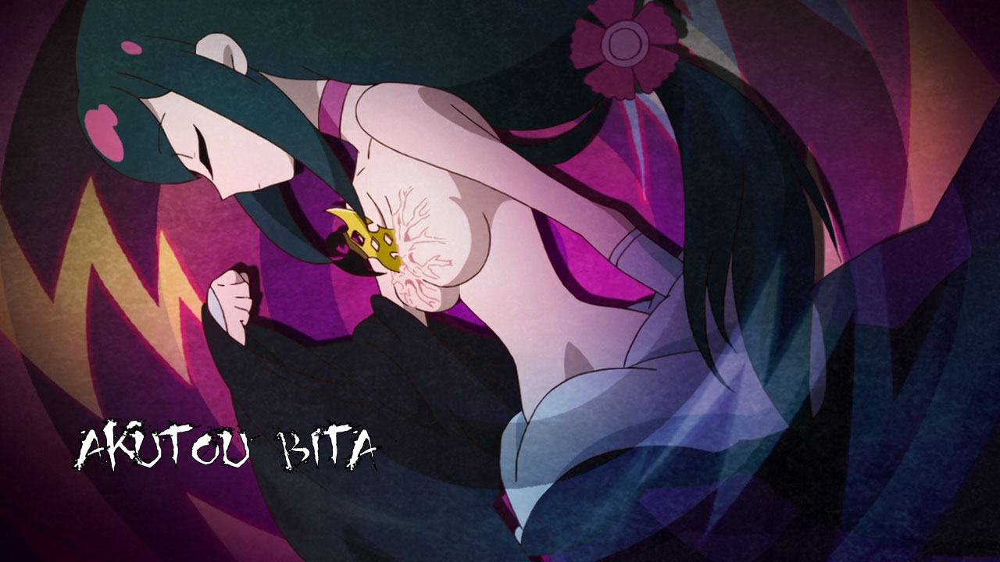
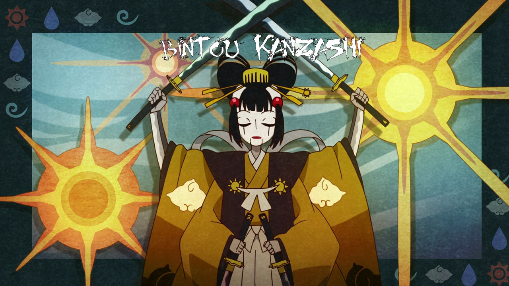
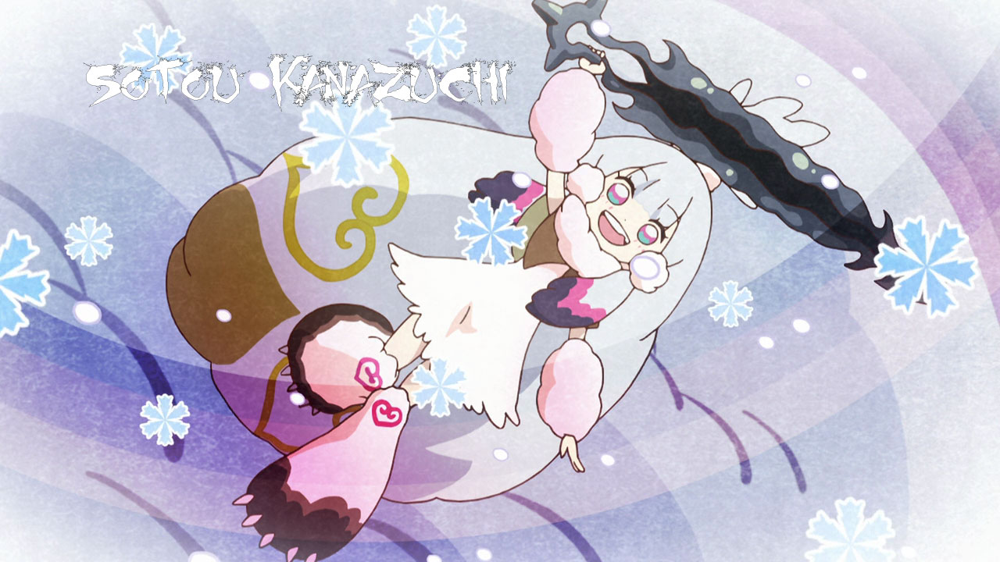
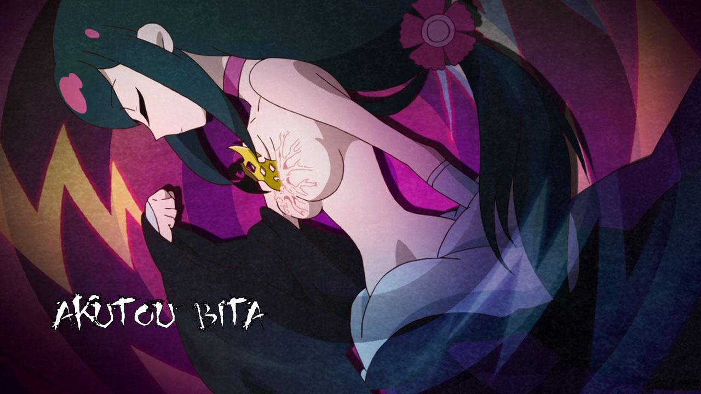
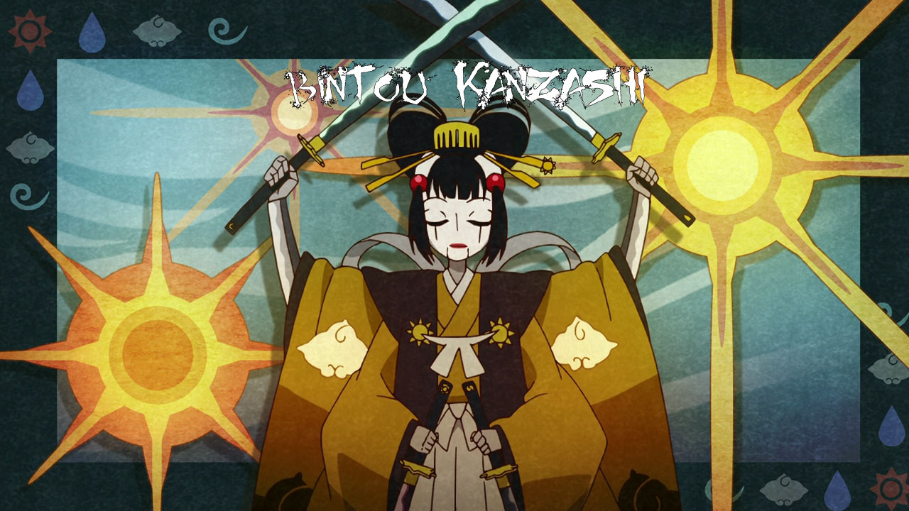


(絶刀「鉋」, Zettō Kanna, [Absolute Sword, Plane])
The first blade retrieved by Shichika and Togame, it is in the possession of Kōmori Maniwa. The blade is straight unlike most katanas, and it is the hardest blade with the ability to never break or bend. The hilt is neatly decorated with plum flower designs. This blade is strongly based on the real life Dotanuki.
(斬刀「鈍」, Zantō Namakura, [Slash Sword, Blunt])
The second blade recovered, it is in the possession of Ginkaku Uneri. It is the sharpest blade with the ability to cut through anything, in sharp contrast to its ironic name, meaning "blunt". It was made for unsheathing at an incredible speed. The katana has triangular patterns around its hilt guard and a black sheath.
(千刀「鎩」, Sentō Tsurugi, [Thousand Sword, Sword])
Comprising 1000 swords, with the last 999 being copies of the first, all 1000 of them are in the possession of Meisai Tsuruga. Even though there are 1000 swords, all of them together are considered to be one sword. It is the most numerous blade with the ability to overwhelm its enemy with its numbers. What makes them stand out is their red sheaths. Only Shichika is able to identify the original sword.
(薄刀「針」, Hakutō Hari, [Thin Sword, Needle])
An extremely thin blade as per its namesake, meaning "needle", it is in the possession of Hakuhei Sabi. It is the brittlest blade as the blade itself is made of glass, which gives it its light weight, but it is rather fragile if used incorrectly. The sheath and hilt are white and decorated with floral patterns.
(賊刀「鎧」, Zokutō Yoroi, [Bandit Sword, Armor])
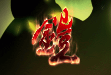A massive full set of armor, it is in the possession of Kanara Azekura. It is the most defense-oriented blade with the ability to protect the user from any damage, especially against attacks that have armor-piercing properties. During the final fight, Shichika notes that the armor's defensive prowess comes from deflecting all impact through its surface and transferring it to the ground. If the wearer finds himself without a foothold, the damage will have nowhere to go and the armor will go over capacity. Its design was based on Western armor, and it has numerous blades around it if observed carefully, both according to Togame. The armor is decorated with many references to the ocean, such as shells and a helmet that's based on a whale.
(双刀「鎚」, Sōtō Kanazuchi, [Twin Sword, Hammer])
A large, blunt-looking, stone sword, it comes into the possession of Konayuki Itezora. The blade is extremely heavy, capable of leaving a crater even when it is simply dropped, and only Konayuki is capable of wielding it with ease. It is the heaviest blade with the ability to crush the enemy with its weight. The sword can also be held by its tip, and used as a hammer instead, hence its "twin" title.
(悪刀「鐚」, Akutō Bita, [Evil Sword, Poor])
A small yellow kunai-like weapon, it comes into the possession of Nanami Yasuri. It holds electricity within it and was designed similar to a lightning bolt. It is the evilest blade with the ability to rejuvenate the user's body.
(微刀「簪」, Bitō Kanzashi, [Delicate Sword, Hairpin])
A four-armed, four-legged, solar powered clockwork mechanical doll that seems to function on its own. It is the most human-like blade with the ability to think by itself and adapt to any situation. It wears a kimono and tall black shoes. Each of its arms hold a sword, and an extra one is hidden in its mouth. Its appearance, made in the image of its creator's love, changes according to the situation, becoming more menacing.
(王刀「鋸」, Ōtō Nokogiri, [King Sword, Saw])
A wooden sword that sharply contrasts its title as "King of Swords", it is in the possession of Zanki Kiguchi. Unlike the other Deviant Blades, it doesn't have any of the poison found in Kiki's blades. It is the purest blade with the ability to cure the effects of the poison the other swords have on their owners. A small floral mark and yellowish streak on the sword identifies it as Nokogiri.
(誠刀「銓」, Seitō Hakari, [True Sword, Scale])
A sword with no blade, it is in the possession of Rinne Higaki. The blade itself is not meant to "cut" anyone other than its owner. The sheath is black and decorated with orange floral patterns, and a wreath of those flowers encircle the top part of the sheath. It is the most trustworthy blade with the ability to weigh the user's heart.
(毒刀「鍍」, Dokutō Mekki, [Poison Sword, Gilt])
A black jagged and bladed katana decorated with iridescent designs, it is now in the possession of Hōō Maniwa. The blade also gives off a dark cloudy aura. This blade originally has no owner as it was found inside of a crystal-like spire. It is the most poisonous blade with the ability to corrupt the user. The blade itself contains a part of the spirit of its creator within.
(炎刀「銃」, Entō Jū, [Flame Sword, Gun])
A pair of pistols, one a blue six-chambered revolver and the other a red semi-automatic that holds eleven bullets, both are in the possession of Princess Hitei and used by her retainer, Emonzaemon Sōda. Each is decorated with a long flowing mane with a bead on its end. It is the most automatic blade with the ability to consecutively shoot down enemies from a distance.